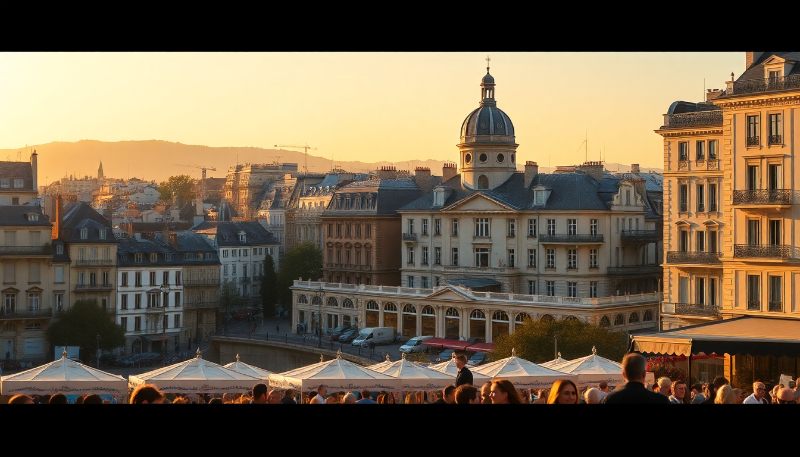

Best Time to Visit France: A Month-by-Month Guide

I’ve been to France in every season—once for a rainy November in Lyon, once for a sweltering August in Marseille—and I’ve learned the hard way that timing matters more than you’d think. Here’s what I’d tell a friend planning their first trip: the “best” month depends entirely on whether you want empty museums, beach weather, or affordable hotel rates. This guide breaks down each month by what you’ll actually experience in Paris, Nice, Lyon, and Marseille.
When is the best time to visit France for good weather and fewer crowds?
Late spring (May-June) and early autumn (September-October) hit the sweet spot. You get mild temperatures, long daylight, and the big tourist sites aren’t yet shoulder-to-shoulder. I walked through the Louvre in late May without queuing for more than ten minutes, and the Jardin du Luxembourg was full of locals reading, not selfie sticks.
- May in Paris: average highs around 18°C (64°F). The Musée d’Orsay felt half-empty on a Tuesday morning.
- June in Nice: beach weather without the August bake. Promenade des Anglais was busy but not suffocating.
- September in Lyon: the Vieux Lyon streets were calm, and the Bellecour square had room to breathe.
- October in Marseille: the Vieux-Port still had outdoor seafood stalls, and the Calanques hiking trails weren’t closed for fire risk.
If you hate crowds, skip July and August. If you hate rain, avoid November through February—especially in Paris, where the grey can feel oppressive.
What is France like in winter (December to February)?
Winter is cheap, quiet, and cold. I stayed at Hôtel des Arts in Montmartre for half the summer rate, and the Sacré-Cœur was nearly empty at sunrise. But daylight is short—sunset hits around 5 PM in Paris—and many outdoor attractions like the Jardin des Plantes are less appealing.
- December: Christmas markets in Strasbourg are famous, but Lyon’s Fête des Lumières (first weekend) is the real spectacle. Book accommodation a year ahead for that.
- January: The Galeries Lafayette rooftop view is still open, but the wind cuts through you. Marseille is milder—around 12°C (54°F)—and the MuCEM museum is a good indoor option.
- February: Nice’s Carnaval de Nice runs for two weeks. It’s kitschy fun, but the beach is empty and the water is frigid.
My take: winter is great for museum lovers and budget travelers, but miserable if you want to sit at a sidewalk café. I’d only do it if you’re targeting the Alps for skiing.
How crowded is France in spring (March to May)?
Spring starts slow and builds fast. March is still quiet, but by May the crowds arrive. I visited Mont Saint-Michel in early April and had the abbey nearly to myself—by late May, the shuttle buses were queuing.
- March: Paris is still cold (10°C/50°F). Musée Rodin was practically empty. Lyon’s Tête d’Or Park starts blooming.
- April: Easter week spikes prices. Nice sees the first beachgoers, but the water is too cold for swimming. Marseille’s Basilique Notre-Dame de la Garde had manageable lines.
- May: My favorite month for Paris. The Canal Saint-Martin area was lively but not packed. Lyon’s Les Halles de Lyon Paul Bocuse food market was busy but not chaotic.
The catch: May also brings strikes. I got stuck on a RER B line strike heading to CDG Airport—leave extra time if you’re flying out.
Is summer (June to August) too hot and crowded in France?
Yes and no. June is lovely; July and August are a test of patience. I spent a week in Marseille in mid-August and the Vieux-Port smelled like sunblock and sweat. The Calanques were closed for fire risk, and every restaurant on Cours Julien had a 45-minute wait.
- June: Nice hits 25°C (77°F). The Colline du Château park offers great views without the August crush. Lyon is warm but bearable.
- July: Paris is full of tourists. The Eiffel Tower queues can hit two hours. Marseille hits 30°C (86°F) and the mistral wind can make it feel like a hair dryer.
- August: Avoid Paris unless you like closed bakeries (many locals flee). Nice beaches are packed sardine-style. Lyon is quieter because the students are gone.
My advice: if you can only go in summer, pick June. If you must go in August, head to Brittany or the Alps instead of the cities.
What about autumn (September to November)?
Autumn is my personal favorite. September feels like a second spring—warm days, fewer tourists, and lower prices. I booked a last-minute room at Hôtel Le Six in Lyon’s Presqu’île for 30% less than July rates.
- September: Paris is still warm (20°C/68°F). The Montmartre vineyard harvest happens mid-month. Nice has the best swimming conditions—water is still 22°C (72°F).
- October: Marseille is perfect for hiking the Calanques (trails reopen after fire bans). Lyon’s Bouchon Lyonnais restaurants are cozy without the summer rush.
- November: Grey and rainy in Paris. The Musée de l’Orangerie was a good refuge, but the Tuileries Garden was a mud pit. Nice sees rain too, but the Marc Chagall Museum is worth a half-day.
The trade-off: daylight savings ends in late October, so evenings get dark by 5:30 PM. Plan your sightseeing for mornings.
FAQ
When is the cheapest time to visit France? January and February. Hotel rates in Paris drop 40-50% from summer peaks, and flights are cheapest. I found a room at Hôtel de la Bretonnerie in the Marais for €110/night in January—same room was €250 in August. The catch: the weather is cold and grey, and some smaller restaurants close for the month.
What month has the best weather in Nice? September. The Mediterranean is still warm enough to swim (22°C/72°F), the sun is strong but not scorching (27°C/80°F), and the crowds from July-August have thinned. I spent a week there in mid-September and had the Promenade des Anglais nearly to myself at sunset.
Should I visit France during a major holiday or festival? Only if you plan ahead. Lyon’s Fête des Lumières (early December) is incredible but hotels book out a year in advance. Paris’s Bastille Day (July 14) has fireworks at the Eiffel Tower, but the metro is a nightmare. Nice’s Carnival (February) is fun but overpriced. I’d skip August 15 (Assumption) when everything closes.
Conclusion
- May and September are the sweet spots: good weather, moderate crowds, and fair prices.
- Winter works for budget travelers and museum lovers, but avoid it if you want outdoor dining or beach time.
- Summer is manageable in June, but July and August are overcrowded and overpriced in Paris, Nice, and Marseille.
- November through February are the cheapest months, but pack for rain and short days—especially in Lyon and Paris.
- If you’re flexible, check local events like Lyon’s Fête des Lumières or Nice’s Carnival, but book accommodation months ahead.